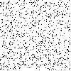
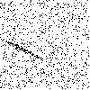
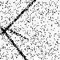
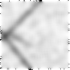
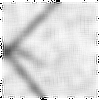
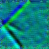
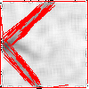
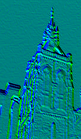
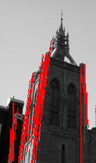

Détection de segments dans une image#
C’est une technique assez vieille et qui consiste à détecter des segments comme des anomalies : l’alignement de points est un événement assez rare dans un nuage de points mais rare comment ? Cette idée mène à la probabilisation d’une image pour quantifier ce qu’est un alignement de points nécessairement rare.
Une image aléatoire#
On considère un bruit aléatoire uniforme dans une image et on ajoute des points aléatoires tirés le long d’une ligne selon une loi gaussienne : uniforme sur la ligne, gaussien autour du segment.
[2]:
from mlstatpy.image.detection_segment import random_noise_image, convert_array2PIL
img = random_noise_image((100, 100))
convert_array2PIL(img, mode="binary")
[2]:

[3]:
from mlstatpy.image.detection_segment import random_segment_image
random_segment_image(img, density=3.0, lmin=0.3)
[3]:
{'size': 36,
'angle': 2.285619160431492,
'x1': 23.597410654261072,
'y1': 40,
'x2': 0,
'y2': 67.18753777770554,
'nbpoints': 108}
[4]:
convert_array2PIL(img, mode="binary")
[4]:

[5]:
random_segment_image(img, density=5.0, lmin=0.3)
random_segment_image(img, density=5.0, lmin=0.3)
convert_array2PIL(img, mode="binary")
[5]:
[6]:
pilimg = convert_array2PIL(img, mode="binary").convert("RGB")
pilimg
[6]:

[7]:
from PIL import ImageFilter
pilimg = (
pilimg.filter(ImageFilter.BLUR)
.filter(ImageFilter.BLUR)
.filter(ImageFilter.BLUR)
.filter(ImageFilter.BLUR)
)
pilimg
[7]:

[8]:
from PIL import ImageEnhance
enh = ImageEnhance.Sharpness(pilimg)
final_img = enh.enhance(4)
final_img
[8]:

Gradient#
La détection des segments est basée sur le gradient.
[9]:
from mlstatpy.image.detection_segment import compute_gradient, plot_gradient
grad = compute_gradient(final_img, color=0)
[10]:
plot_gradient(pilimg.copy(), grad, direction=-2)
[10]:

Détection de segments#
[11]:
from mlstatpy.image.detection_segment import detect_segments
seg = detect_segments(final_img, verbose=1, seuil_nfa=1e-1)
len(seg)
n = 1000 ... 82 temps 0.27 sec nalign 298
n = 2000 ... 82 temps 0.52 sec nalign 671
n = 3000 ... 164 temps 0.83 sec nalign 964
n = 4000 ... 164 temps 1.10 sec nalign 1357
n = 5000 ... 249 temps 1.39 sec nalign 1544
n = 6000 ... 252 temps 1.66 sec nalign 1924
n = 7000 ... 374 temps 1.95 sec nalign 2183
n = 8000 ... 375 temps 2.23 sec nalign 2460
n = 9000 ... 379 temps 2.56 sec nalign 2728
[11]:
379
[12]:
from mlstatpy.image.detection_segment import plot_segments
plot_segments(final_img.copy(), seg)
[12]:

Détection de segments sur une image#
[13]:
from PIL import Image
egl = Image.open("eglise_zoom2.jpg")
egl
[13]:
On réduit la taille de l’image.
[14]:
egl2 = egl.crop((0, 0, egl.size[0] // 3, 3 * egl.size[1] // 4))
egl2
[14]:
[15]:
grad2 = compute_gradient(egl2, color=0)
plot_gradient(egl2.copy(), grad2, direction=-2)
[15]:

[16]:
seg2 = detect_segments(egl2)
len(seg2)
[16]:
490
[17]:
from mlstatpy.image.detection_segment import plot_segments
res = plot_segments(egl2.copy(), seg2)
res
[17]:

Il faudrait fusionner les segments mais cela a l’air de marcher.